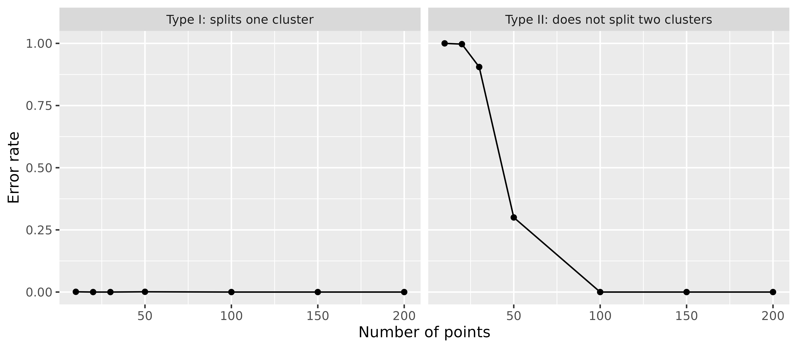

Hamerly
and Elkan (2003) evaluate G-means on synthetic data (their Table 1),
study the statistical power of the split test (their Figure 3), and
cluster two real datasets of handwritten digits. This article reruns
these experiments with gmeans(). The paper also compares
G-means with X-means and the BIC and reports run times, which are left
out here.
The defaults of gmeans() follow the paper: the search
starts from one center (k_init = 1), the Anderson-Darling
test uses the significance level level = 0.0001, and the
number of clusters is not capped (k_max = Inf). The paper
provides neither its data nor its code, so the synthetic data below are
regenerated from its description, and the results can only be compared
approximately.
Synthetic data
Each synthetic dataset in the paper has 5000 points in \(d = 2\), 8, or 32 dimensions, drawn from \(k = 5\), 20, or 80 Gaussian clusters. The cluster means are uniform in the unit hypercube, and \(\sigma\) is chosen so that no two means are closer than \(3\sigma\). Each cluster is made non-spherical by a random scaling and rotation matrix. The paper does not say how the scaling is drawn, so here each dimension is scaled by a factor drawn uniformly between 0.2 and 1, which keeps every cluster at most \(\sigma\) wide in any direction.
simulate_clusters <- function(k, d, n = 5000L) {
centers <- matrix(runif(k * d), nrow = k)
sigma <- min(dist(centers)) / 3
cluster <- rep_len(seq_len(k), n)
x <- matrix(0, nrow = n, ncol = d)
for (j in seq_len(k)) {
rows <- which(cluster == j)
rotation <- qr.Q(qr(matrix(rnorm(d * d), nrow = d)))
shape <- diag(runif(d, 0.2, 1), nrow = d) %*% rotation
noise <- matrix(rnorm(length(rows) * d), ncol = d)
x[rows, ] <- sweep(sigma * noise %*% shape, 2L, centers[j, ], "+")
}
list(x = x, cluster = cluster)
}The paper reports the number of clusters found and the distortion relative to the distortion of the true clustering, both as mean and standard deviation over 30 datasets per setting. Splitting the data into more clusters than there are lowers the distortion below 1, and so does k-means moving points near the boundary between two clusters to the closer center. A distortion above 1 means the clusters found fit the data worse than the true clusters.
optimal_distortion <- function(x, cluster) {
sum(vapply(
split(seq_len(nrow(x)), cluster),
\(rows) sum(scale(x[rows, , drop = FALSE], scale = FALSE)^2),
numeric(1L)
))
}
set.seed(2003)
settings <- CJ(d = c(2L, 8L, 32L), k = c(5L, 20L, 80L), rep = 1:30)
synthetic <- settings[,
{
sim <- simulate_clusters(k, d)
fit <- gmeans(sim$x)
.(
k_found = nrow(fit$centers),
distortion = fit$tot.withinss / optimal_distortion(sim$x, sim$cluster)
)
},
by = .(d, k, rep)
]
mean_sd <- function(x, digits) {
sprintf("%.*f ± %.*f", digits, mean(x), digits, sd(x))
}
replicated <- synthetic[,
.(k_found = mean_sd(k_found, 1L), distortion = mean_sd(distortion, 2L)),
by = .(d, k)
]
paper <- rowwiseDT(
d = , k = , paper_k_found = , paper_distortion = ,
2L , 5L , "9.1 ± 9.9" , "0.89 ± 0.23" ,
2L , 20L , "20.1 ± 0.6" , "0.99 ± 0.01" ,
2L , 80L , "80.0 ± 0.2" , "1.00 ± 0.01" ,
8L , 5L , "5.0 ± 0.0" , "1.00 ± 0.00" ,
8L , 20L , "20.0 ± 0.1" , "0.99 ± 0.00" ,
8L , 80L , "80.2 ± 0.5" , "0.99 ± 0.00" ,
32L , 5L , "5.0 ± 0.0" , "1.00 ± 0.00" ,
32L , 20L , "20.0 ± 0.0" , "1.00 ± 0.00" ,
32L , 80L , "80.0 ± 0.0" , "1.00 ± 0.00"
)
comparison <- paper[replicated, on = .(d, k)]
knitr::kable(
comparison,
col.names = c("d", "true k", "k found (paper)", "distortion (paper)", "k found", "distortion"),
row.names = FALSE
)| d | true k | k found (paper) | distortion (paper) | k found | distortion |
|---|---|---|---|---|---|
| 2 | 5 | 9.1 ± 9.9 | 0.89 ± 0.23 | 11.5 ± 13.1 | 0.84 ± 0.24 |
| 2 | 20 | 20.1 ± 0.6 | 0.99 ± 0.01 | 21.0 ± 2.7 | 0.98 ± 0.04 |
| 2 | 80 | 80.0 ± 0.2 | 1.00 ± 0.01 | 80.1 ± 0.4 | 1.00 ± 0.00 |
| 8 | 5 | 5.0 ± 0.0 | 1.00 ± 0.00 | 5.1 ± 0.3 | 0.99 ± 0.01 |
| 8 | 20 | 20.0 ± 0.1 | 0.99 ± 0.00 | 20.4 ± 0.9 | 0.99 ± 0.01 |
| 8 | 80 | 80.2 ± 0.5 | 0.99 ± 0.00 | 80.7 ± 0.9 | 1.00 ± 0.00 |
| 32 | 5 | 5.0 ± 0.0 | 1.00 ± 0.00 | 5.1 ± 0.3 | 1.00 ± 0.00 |
| 32 | 20 | 20.0 ± 0.0 | 1.00 ± 0.00 | 20.3 ± 0.5 | 1.00 ± 0.00 |
| 32 | 80 | 80.0 ± 0.0 | 1.00 ± 0.00 | 81.1 ± 15.2 | 1.02 ± 0.14 |
In most settings gmeans() finds about the true number of
clusters, as in the paper. With five clusters in two dimensions, both
the paper and gmeans() sometimes split the non-spherical
clusters into many pieces.
With 80 clusters in 32 dimensions, gmeans() usually
finds a few clusters too many (median 83), while the paper finds exactly
80. Each cluster here has only about 62 points. With so few points in so
many dimensions, the two-center k-means of the split test can find a
direction along which even a single Gaussian cluster looks like two, so
the test splits Gaussian clusters more often than the level of 0.0001
suggests. With 80 clusters tested in every round, a few such splits add
up.
stopped_early <- synthetic[k_found < k / 2]
stopped_early
#> Key: <d, k, rep>
#> d k rep k_found distortion
#> <int> <int> <int> <int> <num>
#> 1: 32 80 10 2 1.781In 1 of the 270 datasets, gmeans() stops with less than
half of the true clusters. This is a limitation of G-means itself: when
a split does not separate the clusters cleanly, each part still contains
many clusters, and projected onto the split direction such a mixture can
look Gaussian enough to pass the test at the strict level of 0.0001.
Statistical power
Figure 3 of the paper shows how often the split test makes the wrong decision, as a function of the number of points \(n\). A type I error splits one Gaussian cluster, here with one axis 5% shorter than the other. A type II error does not split two Gaussian clusters whose means are \(5\sigma\) apart. The paper runs 1000 tests per point.
set.seed(2003)
error_rates <- data.table(n = c(10L, 20L, 30L, 50L, 100L, 150L, 200L))
error_rates <- error_rates[,
{
type_1 <- replicate(1000L, {
x <- matrix(rnorm(2L * n), ncol = 2L) %*% diag(c(1, 0.95))
nrow(gmeans(x)$centers) > 1L
})
type_2 <- replicate(1000L, {
x <- matrix(rnorm(2L * n), ncol = 2L)
x[seq_len(n %/% 2L), 1L] <- x[seq_len(n %/% 2L), 1L] + 5
nrow(gmeans(x)$centers) == 1L
})
.(
error = c("Type I: splits one cluster", "Type II: does not split two clusters"),
rate = c(mean(type_1), mean(type_2))
)
},
by = n
]
ggplot(error_rates, aes(n, rate)) +
geom_line() +
geom_point() +
facet_wrap(~error) +
scale_y_continuous(limits = c(0, 1)) +
labs(x = "Number of points", y = "Error rate")
As in the paper, the test almost never splits a single Gaussian cluster, while it needs enough points to split two clusters. In the paper the type II error is close to 1 at 10 and 20 points, about 0.37 at 50 points, and 0 from 100 points on. Here it is 0.905 at 30 points, 0.3 at 50 points, and 0 at 100 points.
Handwritten digits
The paper clusters the Pendigits dataset from the UCI repository, 16 features of pen trajectories of the digits 0 to 9, and reports 69 clusters with a partition quality of 0.196. The partition quality compares the clusters \(j\) with the true classes \(i\): \[ \mathrm{PQ} = \frac{\sum_{i} \sum_{j} p(i, j)^2}{\sum_{i} p(i)^2}, \] where \(p(i, j)\) is the share of points in class \(i\) and cluster \(j\), and \(p(i)\) is the share of points in class \(i\). It is 1 whenever each class lies within a single cluster, and it decreases as the classes are split into more clusters. It does not penalize merging classes: putting all points into one cluster also gives 1.
The paper describes the data as 7984 examples, which matches neither
the training set (7494 examples) nor the full dataset (10992 examples)
on UCI. The training set is used here, since it is the closest. The file
pendigits-train.csv next to this article is a copy of
pendigits.tra, the training set by Alpaydin and Alimoglu
(1996), doi:10.24432/C5MG6K, licensed
under CC BY
4.0.
pendigits <- fread(
"pendigits-train.csv",
header = FALSE,
col.names = c(paste0("x", 1:16), "digit")
)
x <- as.matrix(pendigits[, !"digit"])
digit <- pendigits$digit
partition_quality <- function(truth, cluster) {
p <- table(truth, cluster) / length(truth)
sum(p^2) / sum(rowSums(p)^2)
}
fit <- gmeans(x)
nrow(fit$centers)
#> [1] 86
partition_quality(digit, fit$cluster)
#> [1] 0.1819gmeans() finds 86 clusters with a partition quality of
0.182, compared to 69 clusters and 0.196 in the paper.
The paper also clusters 6000 randomly chosen MNIST digits after a random projection to 50 dimensions, which is not repeated here.
Remaining differences
Apart from the data, gmeans() differs from the paper in
these details:
- The test statistic is corrected for the sample size with the factor \(1 + 0.75/n + 2.25/n^2\) from D’Agostino and Stephens (1986), while the paper uses \(1 + 4/n - 25/n^2\) from Stephens (1974). The paper’s factor is larger for small samples, so its test splits small clusters more readily: to split a cluster, the uncorrected statistic has to exceed about 1.64 with 20 points and 1.75 with 50 points in the paper, but 1.77 and 1.82 here. Rerunning the power study with the paper’s correction lowers the type II error at 50 points by about 0.07, which moves it further from the paper’s figure, while the synthetic results barely change.
- Clusters with fewer than 8 points are not tested and therefore never split, since the p-value of the test requires at least 8 values.
- k-means uses the Hartigan-Wong algorithm, the default of
stats::kmeans(). The paper does not say which algorithm it uses. Withalgorithm = "Lloyd",gmeans()splits fewer Gaussian clusters in high dimensions: for 80 clusters in 32 dimensions, the median number of clusters found over 30 datasets drops from 83 to 81. Neither this nor the correction of the test statistic explains why the paper finds exactly 80 clusters.